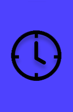

Dra. Luana
Oncologista
CRM: 56858
RQE: 3645
Faculdade de Medicina: Universidade Estadual de Porto alegre, graduada em 2004 com Honras Médicas. Atuou nos Hospitais: Unimed de Novo Hamburgo e Regina de Novo Hamburgo.

Dr. Albano
Neurologista
CRM: 65455
RQE: 8945
Faculdade de Medicina: Universidade Estadual de Porto alegre, graduada em 2004 com Honras Médicas. Atuou nos Hospitais: Unimed de Novo Hamburgo e Regina de Novo Hamburgo.
Dr. Lucas
Urologista
CRM: 65879
RQE: 6541
Faculdade de Medicina: Universidade Estadual de Porto alegre, graduada em 2004 com Honras Médicas. Atuou nos Hospitais: Unimed de Novo Hamburgo e Regina de Novo Hamburgo.
Dra. Ivanir
Cardiologista
CRM: 12548
RQE: 3574
Faculdade de Medicina: Universidade Estadual de Porto alegre, graduada em 2004 com Honras Médicas. Atuou nos Hospitais: Unimed de Novo Hamburgo e Regina de Novo Hamburgo.